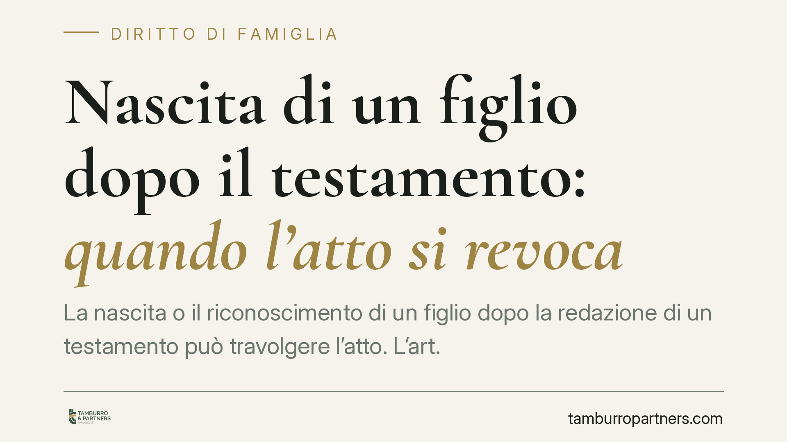

Nascita di un figlio dopo il testamento: quando l'atto si revoca
La nascita o il riconoscimento di un figlio dopo la redazione di un testamento può travolgere l'atto. L'art. 687 del codice civile prevede la revocazione di diritto per sopravvenienza di figli, anche quando il testatore ne aveva già altri. Un tema reso più delicato dalla riforma della filiazione. Vediamo come opera il meccanismo e perché conta per chi pianifica la propria successione.

Il caso tipico
Una persona redige testamento quando ha già uno o più figli. Anni dopo nasce, o viene riconosciuto, un altro figlio. Quel testamento resta valido? La domanda è ricorrente e la risposta incide direttamente sulla devoluzione del patrimonio.
La questione tocca un nervo scoperto del diritto successorio: il rapporto tra la volontà espressa dal testatore e la tutela di un figlio che, al momento dell'atto, non era ancora parte del quadro familiare.
Inquadramento normativo
L'art. 687 del codice civile disciplina la revocazione del testamento per sopravvenienza di figli. La norma stabilisce che il testamento fatto da chi, al tempo della redazione, non aveva o ignorava di avere figli o discendenti, è revocato di diritto per l'esistenza o la sopravvenienza di un figlio o discendente.
Il punto controverso è se la revocazione operi anche quando il testatore aveva già figli e ne sopravviene un altro. L'orientamento consolidato della giurisprudenza di legittimità, maturato anche alla luce della riforma della filiazione (L. 219/2012 e d.lgs. 154/2013), valorizza la *ratio* protettiva della norma: tutelare il mutamento sostanziale della situazione familiare e la presumibile diversa volontà del testatore.
Secondo questa lettura, la sopravvenienza di un ulteriore figlio può incidere sulla stabilità del testamento, salvo che dall'atto risulti una volontà del testatore di disporre comunque in quel modo. La disciplina va letta in coordinamento con i principi costituzionali di uguaglianza (art. 3 Cost.) e di tutela della filiazione (art. 30 Cost.), che impongono di non discriminare tra figli nati in momenti diversi.
> Nota operativa: le pronunce della Cassazione su questo profilo vanno verificate caso per caso nella loro massima aggiornata. Prima di fondare una scelta su un singolo precedente, è opportuno accertarne il testo e l'attualità.
Revocazione e riduzione: due rimedi diversi
È essenziale non confondere due istituti distinti.
La revocazione ex art. 687 c.c. è un effetto che opera di diritto: se ricorrono i presupposti, il testamento cade e si apre la successione legittima, con ripartizione del patrimonio secondo le quote previste dalla legge.
L'azione di riduzione (artt. 553 e seguenti c.c.) è cosa diversa. È lo strumento con cui il legittimario leso agisce per recuperare la quota a lui riservata (la legittima, disciplinata dagli artt. 536 e seguenti c.c.) quando le disposizioni testamentarie o le donazioni l'hanno intaccata. Qui il testamento non cade automaticamente: resta valido nei limiti in cui non pregiudica la quota riservata.
I due rimedi hanno presupposti, effetti e tempistiche differenti. Scegliere quello corretto è determinante per l'esito.
Implicazioni pratiche
Per chi ha redatto un testamento in passato, l'arrivo di un nuovo figlio non è un dettaglio anagrafico: può modificare in radice l'efficacia dell'atto. Un testamento che si riteneva solido potrebbe risultare travolto dalla revocazione di diritto, con riapertura delle regole legali di successione.
Per il figlio sopravvenuto, la posizione dipende dalla situazione concreta: in alcuni casi la revocazione gli assicura la quota legittima; in altri la tutela passa per l'azione di riduzione. L'inquadramento corretto cambia completamente la strategia difensiva.
La riforma della filiazione ha eliminato ogni distinzione formale tra figli. Ciò rafforza l'esigenza di garantire parità di trattamento successorio e alimenta il dibattito sulla piena compatibilità costituzionale di alcune letture restrittive dell'art. 687 c.c.
Cosa fare in concreto
- Rivedere il testamento dopo ogni mutamento rilevante della situazione familiare, in particolare la nascita o il riconoscimento di un figlio.
- Verificare se il proprio atto contiene una manifestazione di volontà che tenga conto di figli futuri: la sua presenza o assenza incide sull'operatività della revocazione.
- Distinguere subito revocazione e riduzione: accertare se il testamento è caduto o se va contestato per lesione di legittima.
- Ricostruire l'asse ereditario con precisione (beni, donazioni pregresse, quote) prima di assumere qualsiasi iniziativa.
- Rispettare i termini di prescrizione dell'azione di riduzione, che hanno decorrenze specifiche e non vanno trascurati.
Contributo informativo a cura di Tamburro & Partners - Avv. Giuseppe Tamburro. Non costituisce parere legale.
Ogni famiglia ha il suo equilibrio.
Separazione, divorzio, affidamento, assegno: se vuoi un confronto riservato su una specifica situazione, scrivi allo studio. Ti rispondiamo entro un giorno lavorativo.